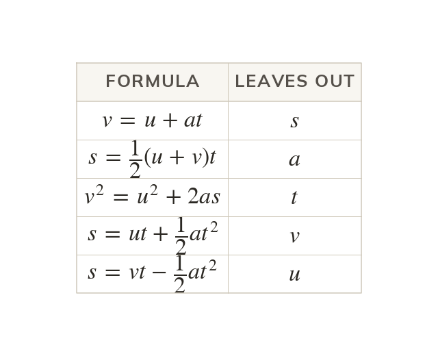
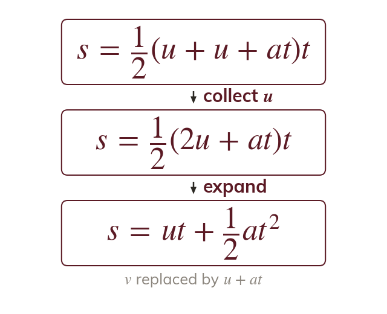
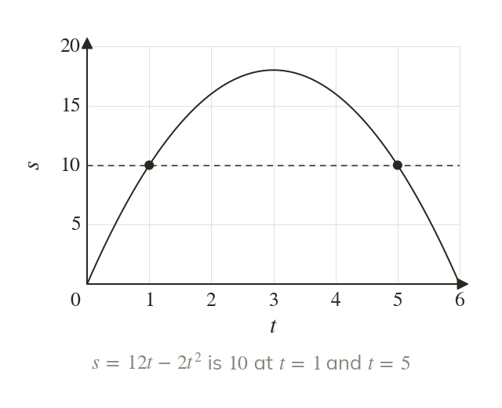
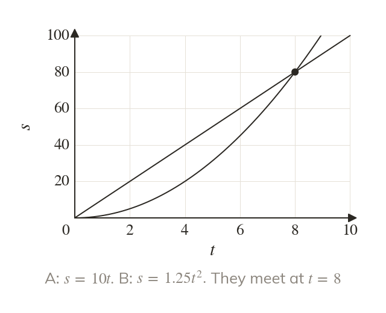
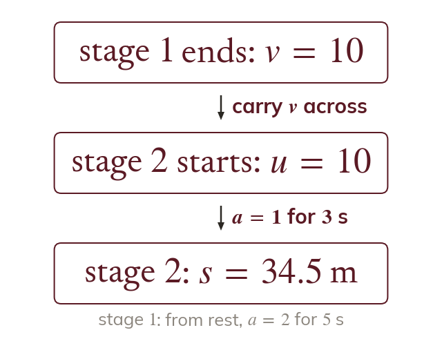

Each formula leaves one out
Each of the five formulae leaves out one of s, u, v, a and Choose the one without the quantity you neither know nor need.
Three more formulae complete the set, so that any constant acceleration problem needs only the right choice of formula. They also handle questions with two answers, and two bodies moving at once, which the next lesson uses for a body thrown upwards.
Work down the page at your own pace. Write every answer in your book first, then click to check it.
Read each card, then follow the worked examples one step at a time.

Each of the five formulae leaves out one of s, u, v, a and Choose the one without the quantity you neither know nor need.

Substituting into gives
Eliminating instead gives

The formula is a quadratic in so it can give two values of Both can be valid, such as the two times a body passes the same point.
Pick an answer. If it's wrong, the feedback tells you which mistake it was.
Read each card, then follow the worked examples one step at a time.

Measure both bodies' times from the same moment and their displacements from the same point. One catches the other when their displacements are equal.

The final velocity of one stage is the initial velocity of the next. Work through the journey one stage at a time, carrying v across.
Pick an answer. If it's wrong, the feedback tells you which mistake it was.
Finished? Next lesson: M9.5 Vertical Motion Under Gravity.
For each skill, tap the one that is true for you today. Your Revise pages start with anything you mark Not yet.
Your ratings are saved on this device only.
Log in, then search for a code to practise that skill.